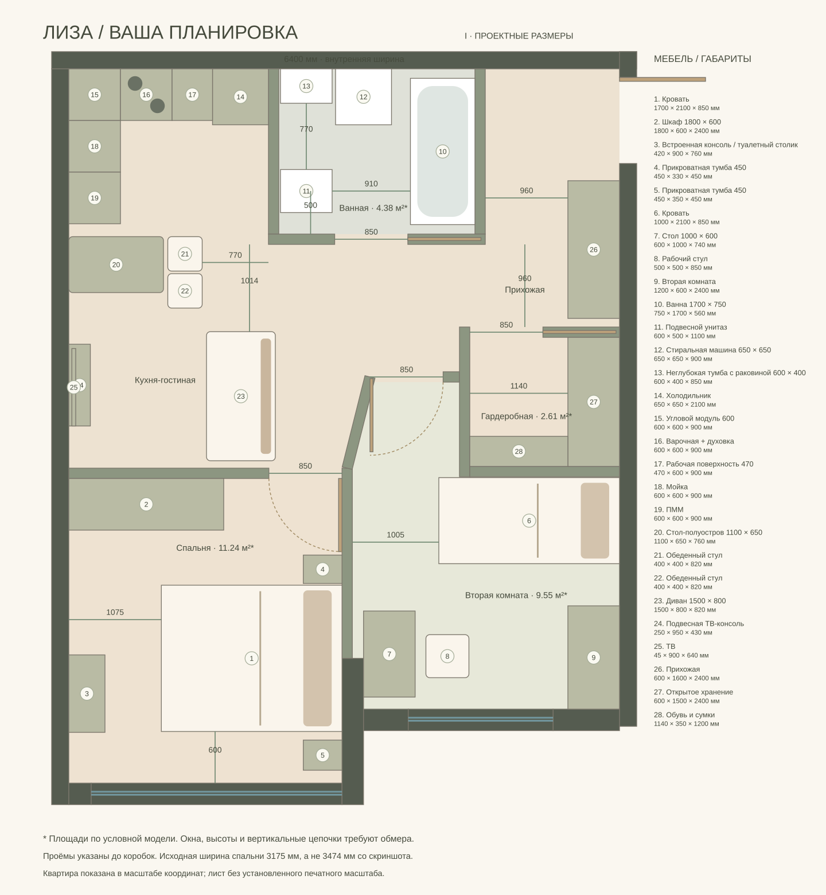
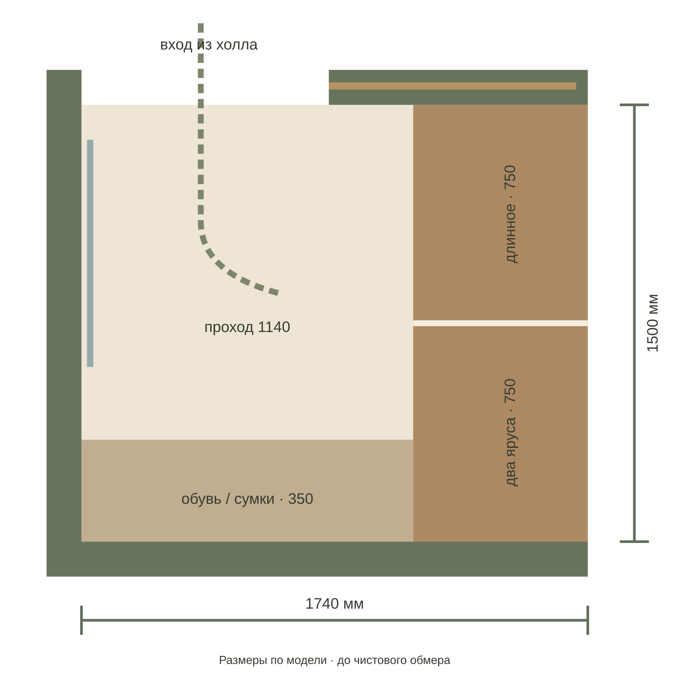
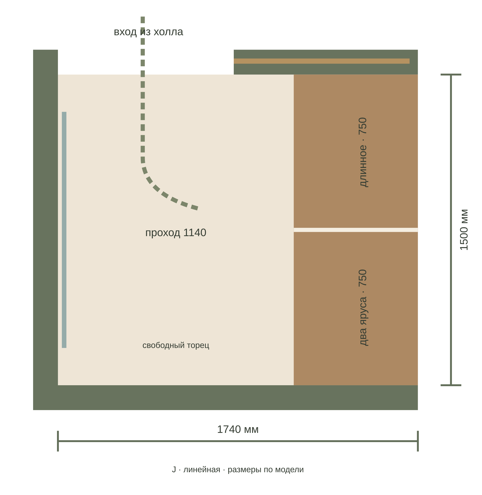
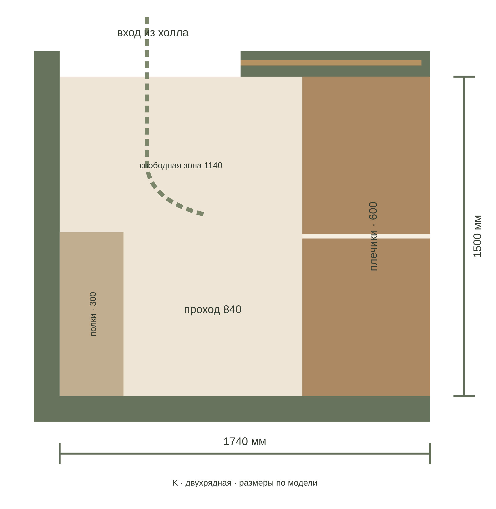

I / Г-образная · баланс

Баланс хранения и движения
Глубокий ряд 1500 × 600 и торцевые полки 500 × 350. Основной проход 1140 мм, у самого торца локально 640 мм.
I · открыть в 3DКомпактная гардеробная у холла в трёх наполнениях: Г-образном, линейном и двухрядном. Вход с общей территории; спальня, кухня и санузел сохраняются, меняется северная часть второй комнаты.
Гардеробная занимает северо-восточную часть второй комнаты и край холла. До неё можно дойти из вашей спальни, не заходя во вторую комнату. Центральный проход и обе жилые комнаты сохраняют независимые входы.
Вторая комната получает более компактную расстановку: кровать 900 × 2000, стол 1000 × 600 боком к окну и шкаф 1200 × 600. Стул показан в рабочем положении; путь к шкафу проходит вокруг него.
Вторая комната: 11,32 → 9,55 м². Стол короче на 400 мм; шкаф прихожей — на 400 мм, шкаф второй комнаты — на 190 мм. Открытый стеллаж второй комнаты убран.
Если большой рабочий стол и простор второй комнаты важнее отдельной гардеробной, базовый D остаётся удачнее.


В основной зоне перед плечиками — 1140 мм, у торцевых полок на последних 350 мм глубины — 640 мм. Это компактный подход к дальней секции, не проход для двух человек. Между входом и торцевыми полками — 1150 мм. Встречный ряд глубиной 350 мм сузил бы проход до 790 мм, поэтому его здесь нет.
Количество вещей зависит от плечиков, толщины одежды и размеров обуви. Цифра «2,61 м²» включает площадь под секциями; это не 2,61 м² свободного пола.
Перегородки, дверь и площадь одинаковые. Меняется только внутреннее наполнение — поэтому варианты можно сравнивать честно по вместимости и проходам.
Глубокий ряд 1500 × 600 и торцевые полки 500 × 350. Основной проход 1140 мм, у самого торца локально 640 мм.
I · открыть в 3D
Только глубокий ряд 1500 × 600. Проход 1140 мм сохраняется по всей длине; обувь и сложенные вещи уходят в нижние секции.
J · открыть в 3D
К глубокому ряду добавлены полки 770 × 300 в дальней половине. Между рядами остаётся 840 мм — рабочая схема для одного человека.
K · открыть в 3D| Параметр | D · утверждено | I–K · одна оболочка |
|---|---|---|
| Взрослая спальня | 11,24 м² | 11,24 м² |
| Вторая комната | 11,32 м² | 9,55 м² |
| Гардеробная | нет | 2,61 м² |
| Шкаф спальни | 1800 × 600 | 1800 × 600 |
| Шкаф прихожей | 2000 × 600 | 1600 × 600 |
| Шкаф второй комнаты | 1390 × 600 | 1200 × 600 |
| Рабочий стол | 1400 × 600 | 1000 × 600 |
| Кухня / ванная | база D | без переноса |
Глубокие шкафные фронты: D — 5,19 м; I — 6,10 м вместе с новой гардеробной, плюс торцевые неглубокие полки. Чистый прирост глубокого хранения — около 0,91 м, а главное приобретение — отдельная комната для переодевания и организации вещей.
Полноценная секция 600 мм и проход около 900 мм требуют полосы примерно 1500 мм. В спальне D это пересекает существующую зону кровати или заставляет сокращать подходы и передвигать границу гостиной.
Между ванной и наружной стеной — 1560 мм. Шкаф 600 мм уже оставляет 960 мм прохода. Если всю эту полосу превратить в закрытую комнату, путь от входной двери к остальной квартире пойдёт сквозь гардеробную.
Получаем непроходную гардеробную, сохраняем главный проход, спальню и мокрую зону. Платим площадью второй комнаты и уменьшаем её мебель. Это самый сбалансированный из проверенных вариантов при приоритете отдельной гардеробной.
Дерево той же палитры, что в спальне; тонкие бронзовые штанги; открытое наполнение без лишних внутренних фасадов. Верхние полки — для сезонного, ежедневные вещи — ниже. Никакого острова или пуфа посреди прохода.
Свет: нейтрально-тёплый 3000 K, хорошая цветопередача, вертикальные профили у передних кромок и отдельный свет у зеркала. Датчик открытия — как сценарий, с ручным включением. Точки и мощности для I пока не включены в инженерный альбом D.
Нужен организованный воздухообмен: приток через дверной переток и решение удаления воздуха после обследования вентиляции. Не подключать гардеробную к вытяжке санузла произвольно. Кассету двери нельзя занимать розетками и крепежом полок.
Глубина 600 мм принята как проектный резерв для обычных плечиков: для сравнения, каркас IKEA PAX имеет глубину 580 мм. Elfa показывает принцип открытого наполнения и использования высоты. Конкретные марки не навязаны: столярка проектируется под чистовой обмер.
IKEA PAX · размеры каркаса · Elfa · организация гардеробной · Проверка геометрии вариантов